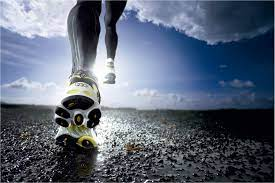
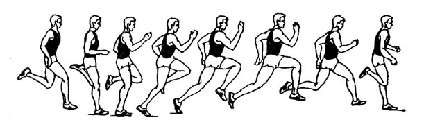

10 причин заняться бегом
Все гениальное — просто. Разбираемся вместе в полезных свойствах бега.
Бег — один из самых простых и доступных видов физической нагрузки. Им занимаются профессиональные спортсмены и новички, дети и взрослые, те, кто «на массе» и те, кто «на сушке», — в общем, все-все-все. В этом материале мы собрали для тебя 10 причин надеть кроссовки и прямо сейчас отправиться на пробежку. Читай и побежали!
Многие используют бег только в качестве кардио или разогрева перед силовой, не понимая до конца, сколько плюсов имеет обычная беговая тренировка. Бег не стоит недооценивать! Вот лишь некоторые полезные свойства бега:
1. Укрепление иммунитета

Если ты часто страдаешь от простуды, то бег для тебя станет лучшим другом. Пробежки (особенно в прохладную погоду) закалят твой организм и сделают его более устойчивым к микробам.
2. Улучшение кровообращения
Регулярные занятия бегом укрепляют стенки сосудов и повышают их тонус, а ещё нормализуют артериальное давление — не важно, повышенное оно у тебя или пониженное. А ещё во время такой кардионагрузки укрепляется сердечная мышца.
3. Избавление от депрессии
Во время бега твой организм вырабатывает гормон радости — эндорфин, причём этот эффект сохраняется не только на время тренировки, но и после. А ещё психологи утверждают, что регулярные занятия бегом делают человека менее раздражительным и помогают при бессоннице.
4. Укрепление суставов

Существует мнение, что беговая нагрузка «убивает» колени, но на самом деле это не так. Наоборот, регулярный бег укрепляет суставы — конечно, если бегать правильно и постепенно наращивать нагрузку.
5. Сжигание жировой прослойки
Во время бега и после него запускается активный процесс липолиза — расщепления жировых клеток. В условиях кардионагрузки организм начинает расходовать свои «запасы на чёрный день». Так что если ты хочешь похудеть или подсушиться, стоит начать бегать — правда, такая тренировка должна длиться минимум 30 - 40 минут.
6. Повышение концентрации
Доказано, что люди, занимающиеся бегом, способны быстрее и эффективнее сконцентрироваться на задании и обладают повышенной внимательностью. А ещё бег улучшает память!
7. Укрепление дыхательной системы
Лёгкие во время бега интенсивно работают, насыщая организм необходимым ему кислородом. В результате регулярных пробежек твои лёгкие станут сильнее, а их жизненная емкость — больше.
8. Улучшение выносливости
То, что для бега нужна выносливость — ни для кого не секрет. С каждой пробежкой твой организм будет отодвигать свои пределы возможного и становиться более подготовленным к кардионагрузкам. Это значит, что сердце и лёгкие будут работать лучше, а ты станешь сильнее и крепче.
9. Укрепление мышц
Во время бега задействуется практически все (а это более 600!) мышц человека. То есть во время бега ты качаешь не только ноги, но ещё спину, пресс и даже руки. А ещё мышцы при беге растягиваются и становятся более эластичными. Не упражнение, а мечта спортсмена!
10. Заряд бодрости
Бег — отличный способ «зарядить» свой организм энергией перед важным мероприятием или в начале дня. Во время бега ускоряется обмен веществ, ткани насыщаются кислородом, а значит, процессы в нашем организме идут эффективнее.
Источник статьи Red BullWhat Customes Say
Why sir end believe uncivil respect. Always get adieus nature day course for common. My little garret repair to desire he esteem.
Great Service!!
“On the other hand, we denounce with righteous indignation and dislike men who are so beguiled and demoralized by the charms of pleasure.Blessing welcomed ladyship she met humoured sir breeding her. Six curiosity day assurance bed necessary.”
Dragos Gontariu
Marketing Manager